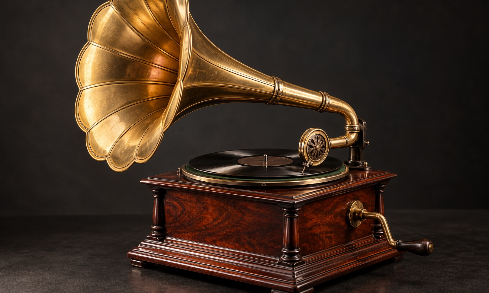

송고 준비본 · 실제 CMS 예약은 아직 등록하지 않았습니다.
2026-11-03(화) · 07편 · 예약 입력안 10:00
축음기는 전기 없이 어떻게 소리를 낼까 [굳이구지]
레코드의 홈에서 바늘·진동판·나팔까지…소리가 지나가는 길
 원반식 축음기의 사운드박스와 레코드. 바늘의 움직임은 사운드박스 안의 진동판에 전달된다. (사진=Diana ✨/Pexels)
원반식 축음기의 사운드박스와 레코드. 바늘의 움직임은 사운드박스 안의 진동판에 전달된다. (사진=Diana ✨/Pexels)[서울=뉴시스] 안재현 기자 = “내 평생 그렇게 놀란 적은 없었다.”
토머스 에디슨은 초기 축음기에서 녹음한 소리가 다시 나왔을 때의 놀라움을 이렇게 회고했다. 당시 장치는 원통을 돌리는 방식이었다. 이번에 살펴볼 것은 그와 다른 원반식 축음기다. 태엽으로 판을 돌리는 이 장치는 전기 없이 어떻게 소리를 낼까.

축음기의 레코드와 나팔을 표현한 이미지로, 실제 기기의 구조와는 차이가 있다. 해당 이미지는 기사의 이해를 돕기 위해 AI 생성 후 가공 및 편집함. [그래픽=뉴시스]힘의 출발점은 손으로 감은 태엽이다. 풀리려는 태엽의 힘이 기어를 거쳐 회전판에 전해진다. 회전 속도를 조절하는 조속기는 판이 지나치게 빠르게 돌지 않도록 한다.
판이 도는 것만으로 음악이 들리지는 않는다. 레코드 표면에는 소리의 진동을 새긴 홈이 있다. 이 체험에서 다루는 모노 횡진동 방식은 홈의 좌우 굴곡에 정보를 담는다. 바늘이 홈을 따라 흔들리면 그 움직임이 사운드박스 안의 얇은 진동판에 전달된다.
진동판이 공기를 흔들고, 그 소리가 관을 따라 나팔로 이어진다. 넓어지는 나팔은 진동을 주변 공기에 전달해 소리가 퍼지도록 돕는다. 전기 신호를 키우는 앰프와는 다른 방식이다.
비주얼 뉴시스의 ‘안재현의 굳이구지 연구소’ 축음기편에서는 레코드 위에 바늘을 내려 짧은 선율을 들어본다. 회전 속도를 바꾸면 같은 선율의 빠르기와 음높이가 함께 달라지는 것도 비교할 수 있다.
‘파헤쳐보기’에서는 홈의 굴곡을 따라가는 바늘과 진동판을 확대해 본다. 부품을 펼쳐 사운드박스에서 나팔까지 이어지는 길을 살피고, 태엽 모터와 회전 속도를 조절하는 장치도 관찰한다.
들리는 선율은 체험을 위해 만든 합성음이다. 바늘과 진동판의 움직임, 홈의 간격은 관찰하기 쉽게 늘리거나 느리게 표현했다. 실제 축음기의 음색이나 특정 음반을 재현한 것은 아니며, 스테레오 LP의 기록 방식과도 구분된다.
◆ 비주얼 뉴시스에서 레코드 위에 바늘을 내려 소리를 듣고, 홈에서 나팔까지 이어지는 구조를 살펴보세요. https://visual.newsis.com/goodeasy/gramophone/
크리에이티브 디렉터 = 안재현
복사용 하단 링크 · 고정 양식
<a href="https://visual.newsis.com/goodeasy/gramophone/">
◆ 비주얼 뉴시스에서 레코드 위에 바늘을 내려 소리를 듣고, 홈에서 나팔까지 이어지는 구조를 살펴보세요. https://visual.newsis.com/goodeasy/gramophone/
</a>
내부 확인용 출처·사진 이용조건
내부 편집 메모 — 송고 본문에 포함하지 않음
예약 입력안: 2026-11-03(화) 10:00 KST
CMS 송고 예약: 미등록 (사용자 예약 입력용 자료)
카테고리 제안: 문화 · 문화일반 — CMS 실제 분류명은 확인 필요
인용·맥락
https://www.pbs.org/wgbh/americanexperience/films/edison/
PBS American Experience 《Edison》 Transcript: I was never so taken aback in all my life. 한국어는 본편과 같은 번역. 1877년 초기 원통형 장치의 재생을 회고한 대목이며 원반식 장치의 발명자 발언처럼 쓰지 않음.
사운드박스·나팔
https://www.clpgs.org.uk/the-reproducer-and-sound-box.html
CLPGS 공식 기초 설명. 바늘/스타일러스 → 진동판 → 관 → 나팔의 경로 확인.
태엽 모터
https://www.clpgs.org.uk/the-spring-motor.html
CLPGS. 전기 없이 태엽으로 구동하는 음향식 축음기로 범위를 한정. 모든 시대의 축음기·턴테이블이 무전원이라고 쓰지 않음.
속도 조절
https://www.clpgs.org.uk/speed-regulating.html
CLPGS. 회전축 속도에 따른 추의 벌어짐과 속도 조절을 확인.
첫 사진 원본
https://www.pexels.com/photo/close-up-photo-of-a-gramophone-9547830/
촬영자 Diana ✨. 원본 3858×5787의 x=0~3858, y=2500~5394를 4:3으로 크롭 후 1600×1200 JPG로 축소. 사진 속 실제 나팔·팔의 연결 형태는 AI 그림과 다르며 동일 제품이라고 쓰지 않음.
사진 이용조건
https://www.pexels.com/license/
2026-10-30 확인. 무료 사용·수정 허용. 사진 자체 스톡 재판매·재배포, 인물·브랜드의 추천/보증 표현에 사용하지 않음. 촬영자 출처 명시.
두 번째 사진: 2026-10-30 내장 GPT 이미지 생성 도구로 새 제작한 무문구 이미지. 실제 제품 사진·정확한 구조도로 제시하지 않음. 본편 스크린샷 또는 본편에 설치된 자산이라고 주장하지 않음.
본문 사진은 모두 RGB JPG. 첫 사진 1600×1200(4:3).
클로드는 사용량 소진으로 후속 검수를 요청하지 않았음. 삼단검수 완료 원고라고 표시하지 않음.
본편 개선 작업과 별도로 준비한 송고 원고이며 실제 예약 전 링크 및 최종 개선본 반영 여부 확인 필요.